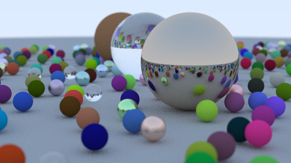

This code draw the picture of a virtual scene by ray tracing algorithm.
For each pixel of image, ray tracer shoot rays to the scene and calculate the pixel color. Ray can reflect or refract when it intersect with objects. This algorithm is the basis for CG animation.
I read Ray Tracing in One Weekend1. This is an e-book which I’ve wanted to read for a long time.
I implemented the code following the book; I implemented the most of code with copy & paste. I only modified the code to set parameters as arguments.
The code produce image as below.

I show the render function in camera class in
camera.h below. For each pixel of an image, we shoot rays
samples_per_pixel times and calculates the average of it.
This is called Monte Carlo Integration.
Since this code has 3 nesting loop, it could be very slow if we use large parameters.
for (int j = 0; j < image_height; j++) {
// ...
for (int i = 0; i < image_width; i++) {
color pixel_color(0,0,0);
for (int sample = 0; sample < samples_per_pixel; sample++) {
ray r = get_ray(i, j);
pixel_color += ray_color(r, max_depth, world);
}
write_color(std::cout, pixel_samples_scale * pixel_color);
}
}Peter Shirley, Trevor David Black, Steve Hollasch. Ray Tracing in One Weekend. raytracing.github.io/books/RayTracingInOneWeekend.html Accessed 30 10. 2026.